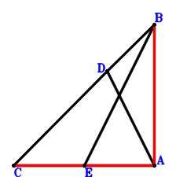

Exercise 1： Let C, D, B be collinear and CD=2DB. E is the midpoint of CA. 2EB=3DA. Prove that CA⊥AB.

\(\because \) C, D, B are collinear and CD=2DB \(\therefore \small\overrightarrow{AD}=\dfrac{2 \small\overrightarrow{AB}}{3} + \dfrac{\small\overrightarrow{AC}}{3}\).\(\because \) E is the midpoint of CA \(\therefore \small\overrightarrow{AE}=\dfrac{\small\overrightarrow{AC}}{2}\).\(\because \) 2EB=3DA \( \therefore\small\overrightarrow{AD}^{2} - \dfrac{4 \small\overrightarrow{EB}^{2}}{9}=\small\overrightarrow{AD}^{2} - \dfrac{4 \left(\small\overrightarrow{AB} - \small\overrightarrow{AE}\right)^{2}}{9}=\left(\dfrac{2 \small\overrightarrow{AB}}{3} + \dfrac{\small\overrightarrow{AC}}{3}\right)^{2} - \dfrac{4 \left(\small\overrightarrow{AB} - \dfrac{\small\overrightarrow{AC}}{2}\right)^{2}}{9}=\dfrac{8 \small\overrightarrow{AB} \cdot \small\overrightarrow{AC}}{9}=0.\)In conclusion, \(\small\overrightarrow{AB} \cdot \small\overrightarrow{AC}=0\), that is, CA⊥AB.